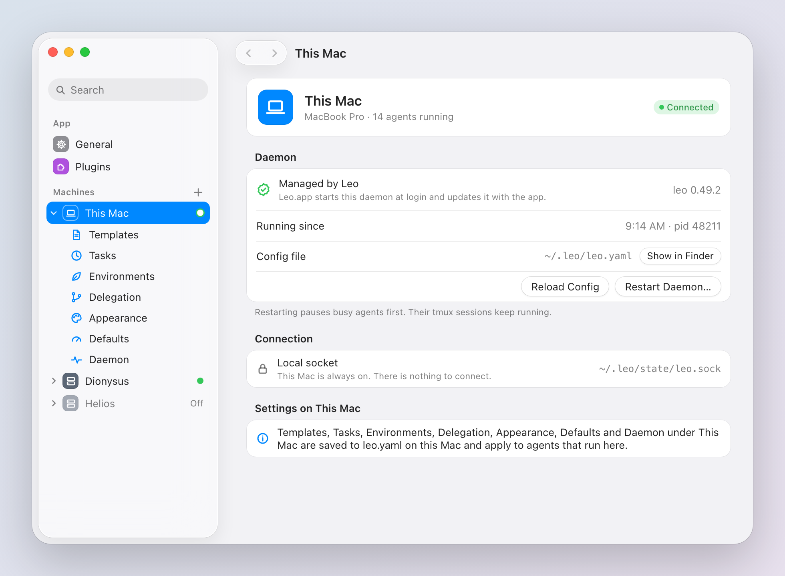
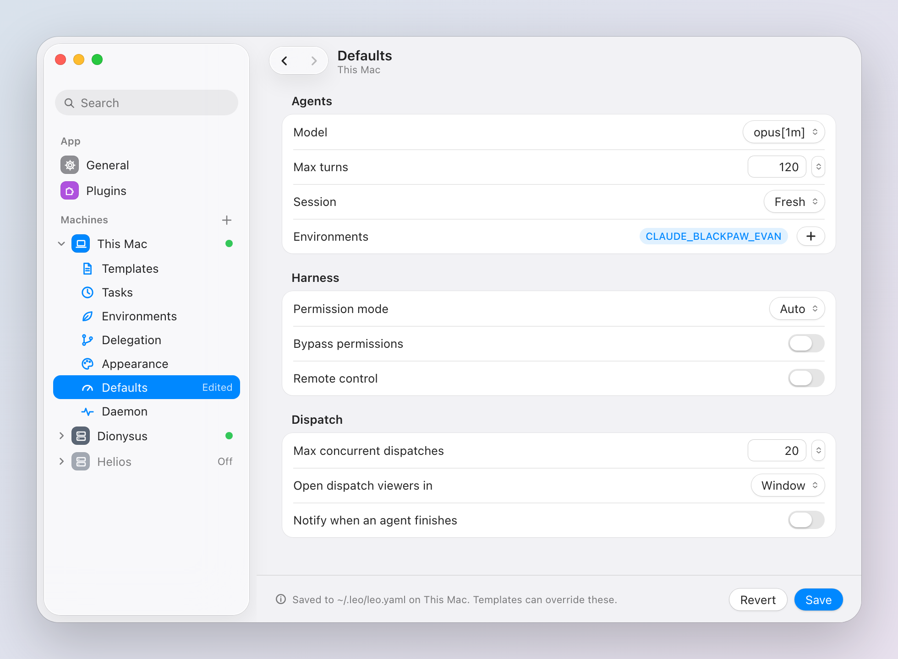
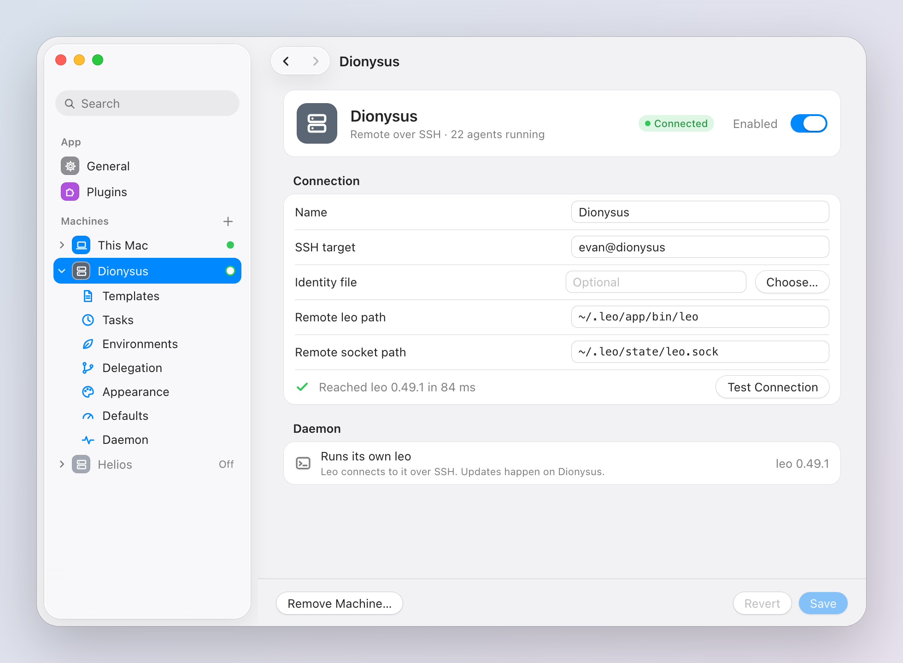
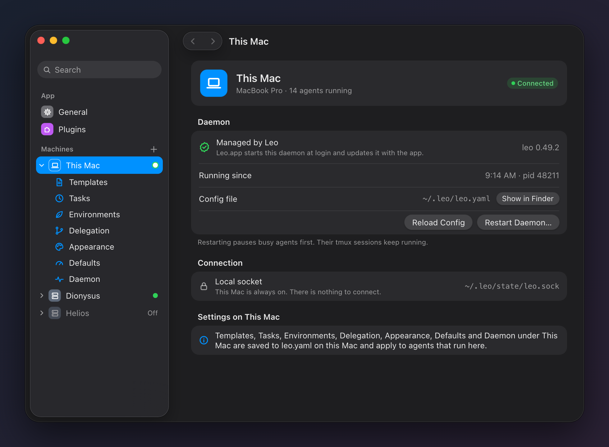
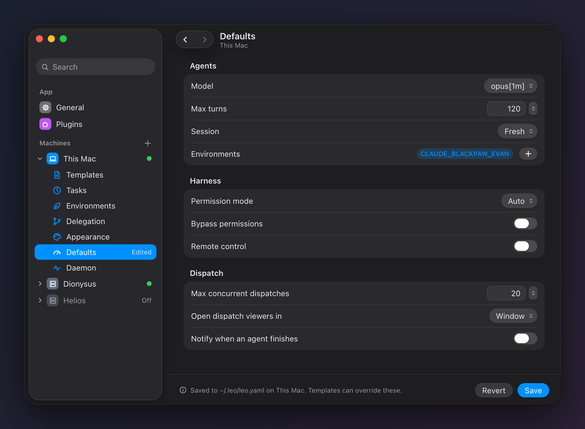
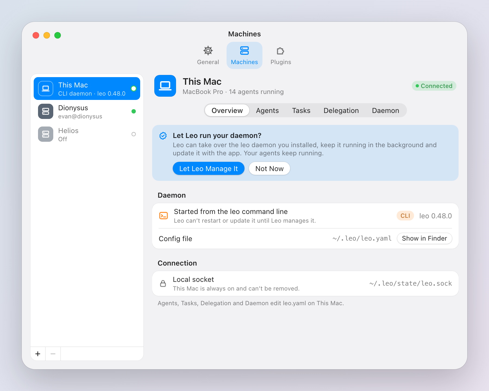
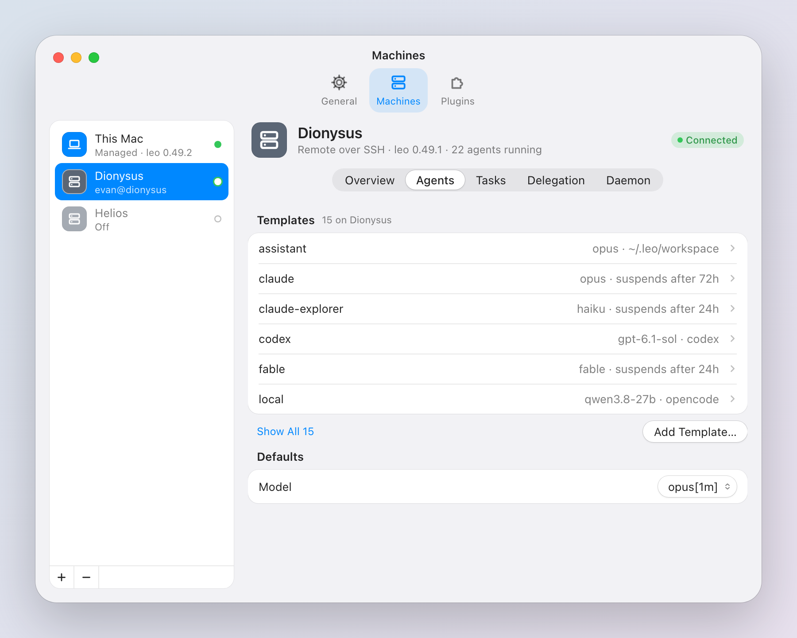
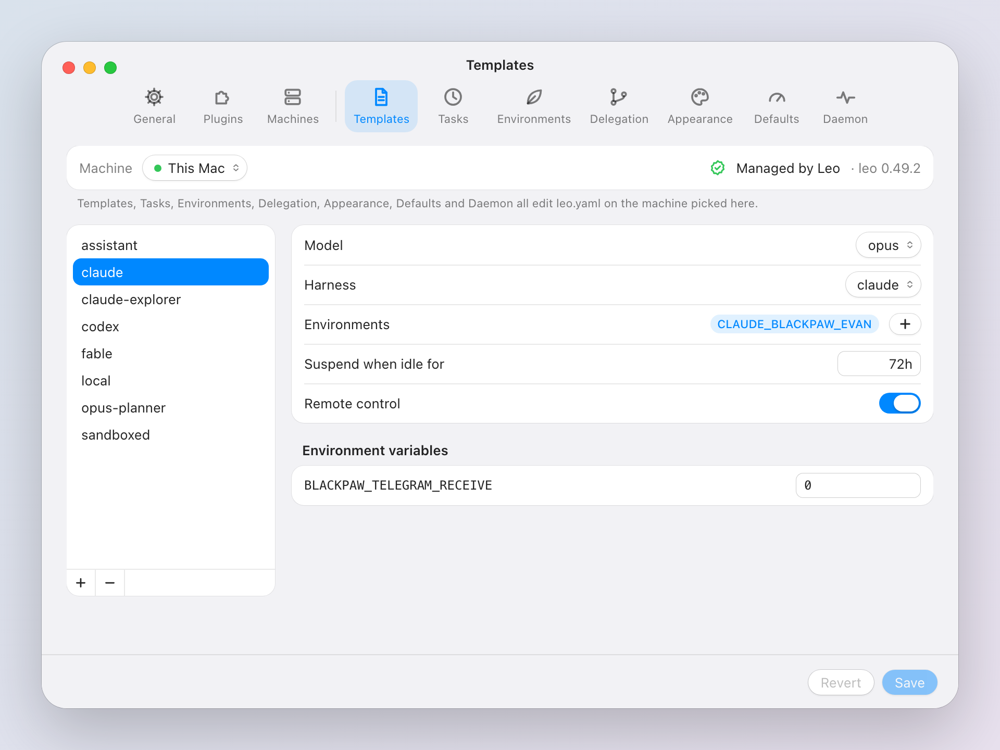
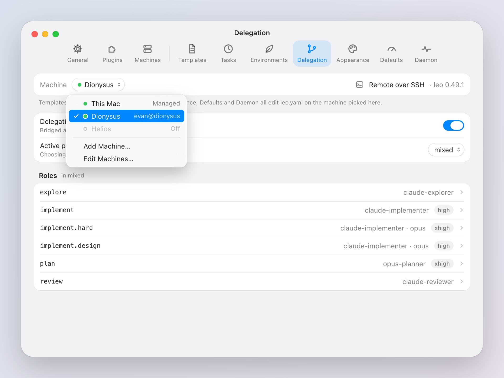
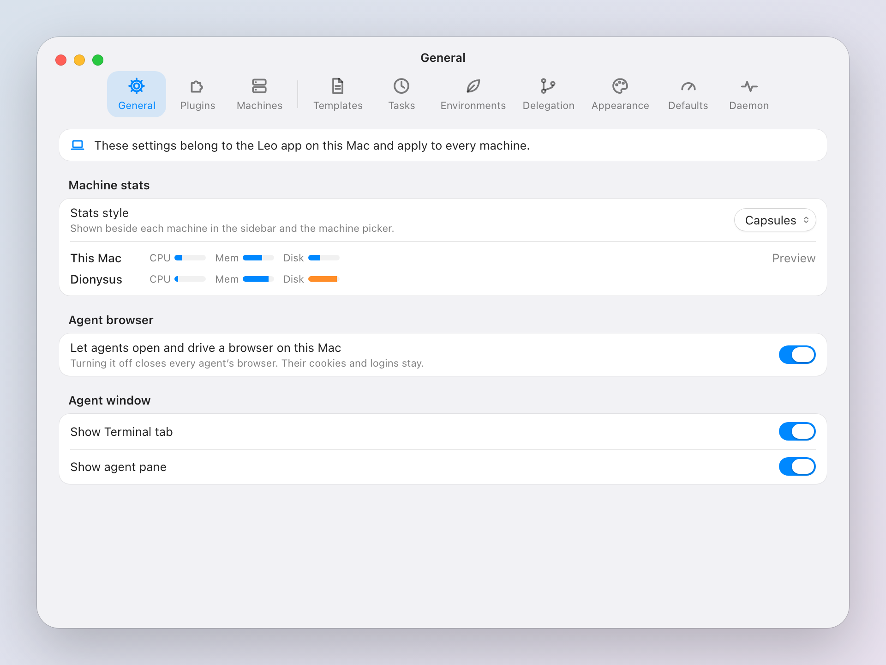

Leo Settings redesign
Three macOS 26 options for the Settings window (macos/Sources/Features/Leo/Settings/). They answer Evan’s three complaints: This Mac can’t be selected, the config tabs quietly follow a toolbar machine picker, and the window looks sloppy. These are static mockups. No Swift has changed.
What’s wrong today
Two selectors that reach different things
Machines shows This Mac as a locked row above the list (“always on: nothing to edit”). The toolbar LeoMachinePicker is the only way to aim the config tabs at This Mac, and it shows up only on those tabs. Nothing on a tab says which machine it is editing.
Scope is invisible
Templates, Tasks, Environments, Delegation, Appearance rules, Defaults, Daemon and Service write to the chosen machine’s leo.yaml. Stats style, Agent browser and Plugins (including the Terminal tab and agent pane) are stored in the app on this Mac. All of them sit side by side in one row of 10 icon-only tabs.
Fixes shared by every option
- Grouped
Formon every pane, with noGroupBox. Use system margins (20 pt) instead of hard-coded padding and widths. - One control rule: a switch for on/off, a pop-up button for one of many, and segmented controls only for switching views (2–5 segments).
- Labels and section headers in sentence case. Buttons and menu items in title case with an ellipsis when more input follows (HIG: writing, menus).
- Status always pairs a symbol and text with semantic colors, never a hard-coded
.green/.redalone (HIG: color, accessibility). - Add/remove stays attached to its list, or becomes an “Add…” button. Save and Revert sit in one pinned footer per pane.
- Service merges into Daemon (status, log, Reload Config, Restart Daemon…, Web UI, remote client), which removes one tab.
- This Mac’s daemon state comes straight from
LeoManagedStatus: Managed by Leo with a version, or Started from the leo command line with the existing “Let Leo Manage It” offer.
A · One sidebarRecommended
The System Settings model. An App group (General, Plugins) sits above a Machines group. This Mac and each remote are rows in that group, and the machine’s panes open beneath it. The selection is the scope.





HIG rationale
- The HIG puts navigation among many areas in a sidebar and says a toolbar is not general navigation (HIG: sidebars, toolbars). Ten or more panes is past what toolbar tabs carry.
- Two levels only: machine, then pane. That is the HIG maximum for a sidebar, with disclosure controlling depth.
- The floating Liquid Glass sidebar sits over content. The content stays in the plain grouped form, with no glass in the content layer.
- Search in the sidebar matches System Settings, and Leo’s schema-driven fields make it cheap to build.
Tradeoffs
- Biggest rewrite:
NSSplitViewController(orNavigationSplitView) replaces theTabView. It needs a sidebar-state model and Back/Forward history. - With many machines the sidebar gets long. Only the selected machine expands, the rest stay collapsed, and remotes that are off are dimmed.
- Moving between machines while a pane has unsaved edits still needs the existing “Discard unsaved changes?” prompt. It now fires on a sidebar selection.
- Collection panes (Templates, Tasks) drill in to item detail instead of showing list and form side by side.
iOS: iOS already makes the same split. App rows (Notifications, Stats style) live in Settings, and each machine’s config is a MachineSettingsViewController page pushed from Daemons. A adds a Machines section to the iOS Settings root that pushes that same page, so both platforms use one model with section names shared through LeoKit.
B · Machines as a source list
A classic Settings window with three toolbar tabs (General, Machines, Plugins). Machines works like Xcode’s Accounts pane: a source list where This Mac is a normal, selectable row, and a detail view with a segmented control for that machine’s sections.


HIG rationale
- Toolbar tabs remain the conventional Mac Settings window. Three nouns with icon and label read at a glance (HIG: settings).
- Machine scope comes from one list selection, and +/− attach to that list.
- App-wide settings get their own tabs, so nothing app-wide sits next to per-machine config.
Tradeoffs
- Machine config gets three levels deep (tab › machine › segment), and Templates and Tasks need a fourth (item sheet).
- Eight panes fold into five segments (Overview, Agents, Tasks, Delegation, Daemon), so “Agents” becomes a long mixed page.
- The detail column is about 560 pt wide, which cramps list-plus-form editors.
iOS: General and Plugins become rows in the root list. Machines becomes a pushed list, and each machine pushes a page with the same five sections as grouped rows instead of a segmented control.
C · Keep the tabs, show the scope
The smallest change. Remove the toolbar picker and put an explicit “Machine: [This Mac ▾]” header inside every machine-scoped tab, showing that machine’s daemon state. App tabs say they are app-wide. New General tab. This Mac becomes selectable on Machines.



HIG rationale
- The scope control sits in the content it affects, not in window chrome (HIG: toolbars: items act on the current view’s content).
- A footnote states the shared behavior: changing the machine on any machine tab changes it for all of them.
- Toolbar tabs are grouped: app tabs, a separator, then machine tabs. Icon and label on every tab.
Tradeoffs
- Still ten tabs, which needs a window about 880 pt wide and is close to overflowing.
- The “follow” behavior remains. It is now visible and explained, but it is still a hidden coupling between tabs.
- Cheapest to build:
LeoMachinePickermoves intoLeoSettingsPaneState, with no navigation rewrite.
iOS: no structural change. Each pushed config screen gets the same machine header row (name, status, daemon state) as its first section.
Recommendation: A
A is the only option where the thing Evan clicks is the thing he edits. Picking This Mac or Dionysus in the sidebar both scopes and reveals that machine’s panes, so there is no second selector and nothing to follow. App-wide versus per-machine is the sidebar’s own structure (App vs Machines), not a footnote. It is also the System Settings pattern every Tahoe user already knows, and it matches how the iOS app already separates app rows from machine pages.
B is a sound fallback if a toolbar-tab window is a hard requirement, but its machine detail is cramped and nests too deeply. C is worth shipping first only as a stopgap. It fixes the confusion but keeps the coupling.
Scope map (all options)
| Setting | Stored | Where it lives in A |
|---|---|---|
| Stats style, Agent browser, Show Terminal tab, Show agent pane | App (UserDefaults, this Mac) | App › General |
| Plugins | App | App › Plugins |
| Machine list, SSH connection, enabled | App | Machines › machine (overview) |
| Templates, Tasks, Environments, Delegation, Appearance rules, Defaults | That machine’s leo.yaml | Machines › machine › pane |
| Daemon: Web UI, remote client, remote hosts, status, log, restart | That machine’s daemon | Machines › machine › Daemon |